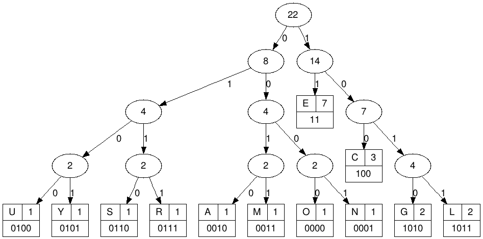

Une compression sans pertes signifie qu'il n'y a eu aucune perte d'informations sur l'objet initial. Il y a donc le même nombre de données que le fichier soit compressé ou non, ces données sont enfaites écrites de façon à prendre moins de place dans la mémoire. Son but est donc de réduire la taille d'un fichier tout en conservant toutes les données qui le composent.
La compression sans pertes est utilisé dans tous les domaines de l'informatique. Elle est la seule solution pour le partage de fichiers éxécutables car ceux-ci ne peuvent avoir leur contenu détérioré. Elle est aussi utilisée pour les fichiers images qui doivent souvent être compressé pour être envoyé sur un réseau. Ici, la compression sans pertes est propice car la qualité de l'image ne sera pas affectée. Les format de fichier de compression sans perte le plus connu est ZIP, il englobe tous les types fichiers. Il existe aussi des formats spécifiques au type de fichier comme le PNG qui permet la compression sans pertes d'un fichier image.
RLE (run-length encoding) est un mode de compression très simple permettant de bien faire comprendre ce qu'est la compression sans pertes. Ici, on prend les suites de caractères identiques dans l'information et on les remplace par un couple de deux caractères : le premier définit le nombre de caractères identiques dans la suite et le deuxième définit le nom du caractère répété.
Exemple:
Le codage de Huffman consiste à une analyse préalable du fichier afin de trier les caractères par leur fréquence d'utilisation. Ainsi les caractères qui sont les plus présents seront codés avec le moins de place possible.
L'idée est la même dans le code Morse. En effet, la lettre "e", très utilisée, est simplement codée avec un point.
Exemple avec le mot "LYCEEGEORGESCLEMENCEAU":
La conversion binaire d'un mot nécessite en principe 8bit pour chaque lettre. Cette expression contient 22 lettres, son expression binaire sera donc de 176bits.
Utilisons maintenant la méthode de Huffman. Nous commencerons par trier le nombres de lettres dans le mot dans l'odre croissant : 7E 3C 2L 2G 1Y 1O 1R 1S 1M 1N 1A 1U
Nous allons ensuite établir un arbre de Huffman. Cela consiste à additioner deux par deux ces valeurs de sorte à que chaque paire ai la plus petite valeur possible puis répéter cette étape pour atteindre la somme totale. Il existe différents arbres de Huffman, la méthode expliquée ici est la plus simple mais la moins efficace.
Il faudra ensuite donner une valeur binaire (0 ou 1) à chaque branche de chaque noeud de l'arbre créé. Cela permettra de donner une representation en binaire de chaque lettre en suivant les branches qui mènent à elle.
Voici une visualisation de notre arbre:
On observe ici que la representation binaire des lettres plus frequentes (E = 11) est plus petite que celle des lettres moins fréquentes (N = 0001)
Il suffit maintenant de convertir notre mot suivant les representations binaires que l'on a trouvé grâce à notre arbre:
| L | Y | C | E | E | G | E | O | R | G | E | S | C | L | E | M | E | N | C | E | A | U |
| 1011 | 0101 | 100 | 11 | 11 | 1010 | 11 | 0000 | 0111 | 1010 | 11 | 0110 | 100 | 1011 | 11 | 0011 | 11 | 0001 | 100 | 11 | 0010 | 0100 |
TOTAL : 92bits.
L'information qui sera envoyé sera 52% moins importante cependant le destinataire devra posséder ce même arbre de Huffman pour décompresser le code.